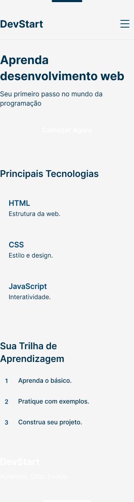
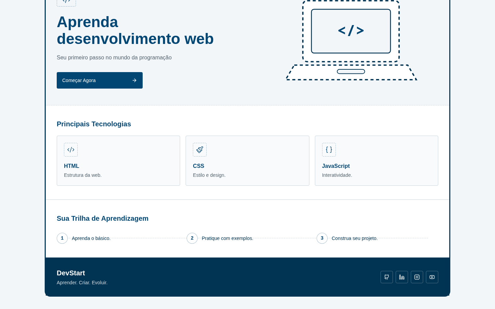

Nome do Site
O nome DevStart combina as palavras em inglês "Dev", relacionada a desenvolvimento, e "Start", que significa início. A ideia é transmitir que o site é um ponto de partida para quem deseja aprender desenvolvimento web. Escolhi esse nome porque é curto, moderno e fácil de lembrar, além de representar o caráter educativo e tecnológico do projeto.
Finalidade do Site
O DevStart será um site educativo destinado a pessoas que desejam aprender os fundamentos do desenvolvimento web. O conteúdo apresentará HTML, CSS e JavaScript, explicando suas funções, aplicações e formas de utilização. O site também oferecerá uma trilha de aprendizagem com etapas práticas para ajudar os visitantes a organizar seus estudos e acompanhar seu progresso.
Cenários
- Por onde devo começar a aprender desenvolvimento web?
- Qual é a diferença entre HTML, CSS e JavaScript?
- Quais etapas preciso concluir para desenvolver minha primeira página web?
Esquema de Cores
| Cor | Código | Aplicação |
|---|---|---|
| Azul principal | #024674 | Cabeçalhos, links e botões |
| Azul escuro | #013352 | Rodapé, títulos e áreas de destaque |
| Branco | #FFFFFF | Fundo principal e texto sobre fundos escuros |
| Cinza claro | #F3F6F8 | Fundo de cartões e seções secundárias |
Tipografia
- Roboto: títulos, navegação e textos principais do site.
- Arial, sans-serif: fonte alternativa para garantir a legibilidade caso a fonte principal não esteja disponível.
Wireframes
Versão Mobile

Versão Desktop
